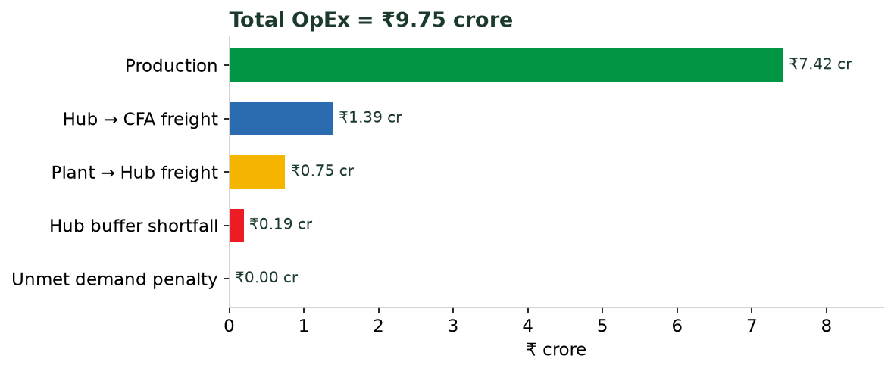
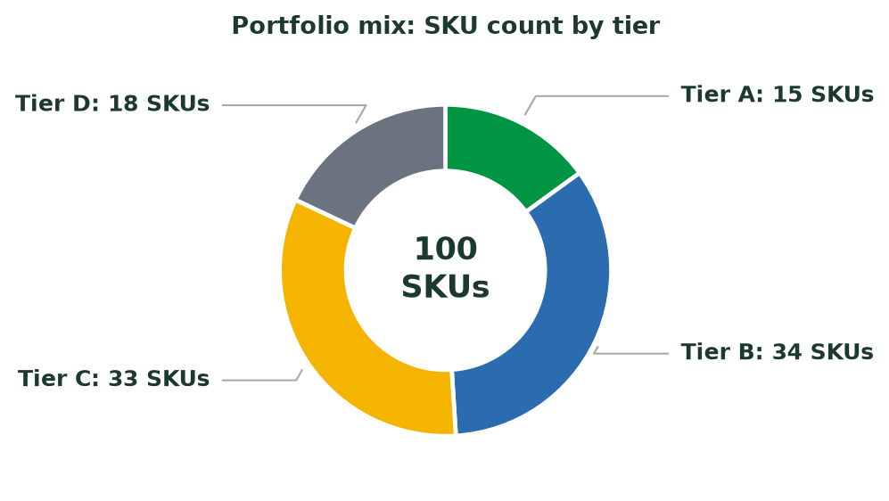
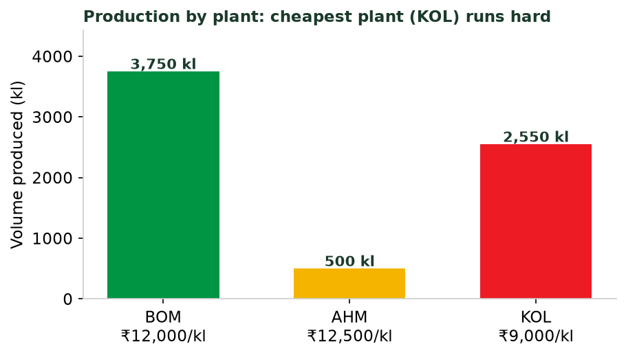
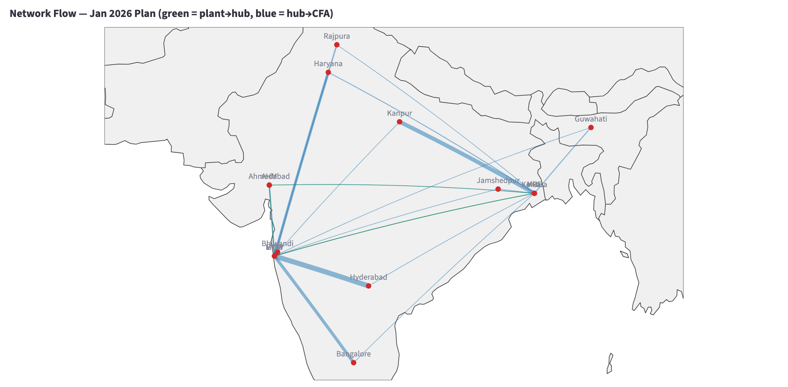
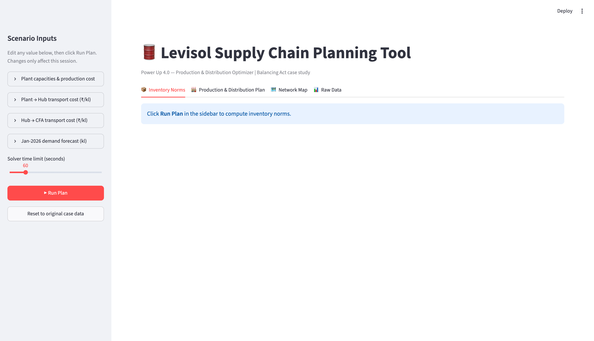
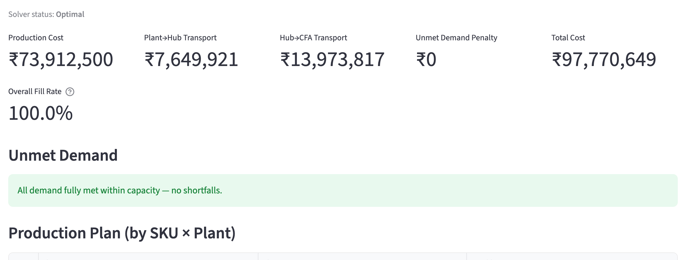
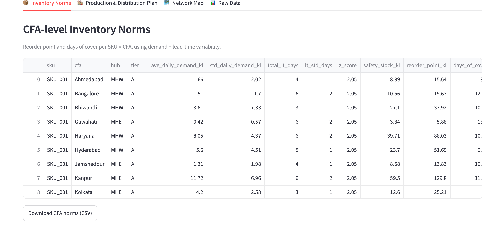
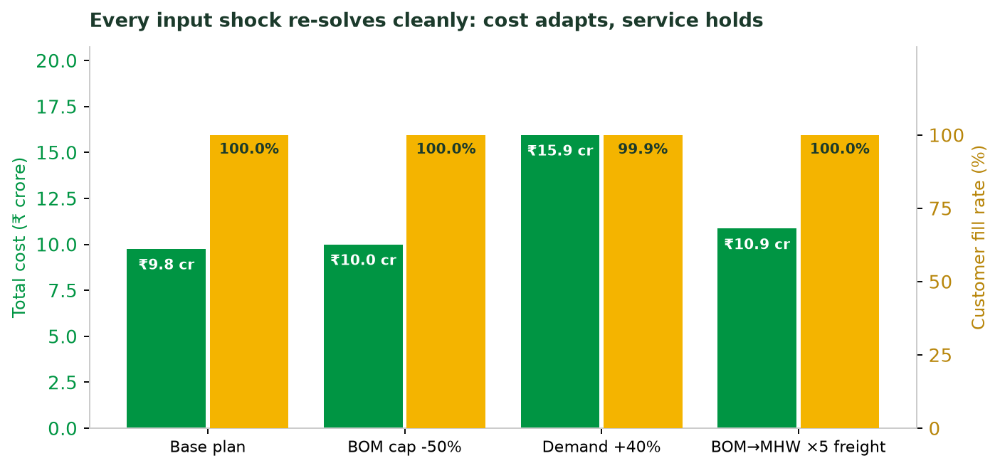

Levisol faces a base-oil price shock: leadership must release cash and cut distribution cost without letting critical SKUs stock out. We were engaged to redesign inventory norms, build a least-cost production & sourcing plan for January 2026, and deliver a self-service planning tool the team can run every month.
| Component | What we built | Output |
|---|---|---|
| 1 · Inventory Norms | Statistical engine: safety stock, reorder point & days-of-cover from demand + lead-time variability | 957 SKU×CFA + 151 SKU×Hub norm rows |
| 2 · Production & Distribution Plan | Mixed-Integer optimisation minimising total landed cost | ₹9.75 cr plan, 100% served |
| 3 · Planning Tool | Streamlit web app: edit any input, one-click re-plan, map & cost views | Live, non-technical-ready |

This document summarises the analytical approach and results. The working tool, full data outputs (Excel), methodology document and source code accompany this submission.
Product flows from 3 plants → 2 mother hubs → 10 CFAs → customers. Any plant may supply any hub, and CFAs may draw from either hub, so routing is a genuine optimisation, not a fixed map. All volumes are in kl (kilolitres = 1,000 L).
| Plant | Location | Prod. cost ₹/kl |
|---|---|---|
| BOM | Mumbai | 12,000 |
| AHM | Ahmedabad | 12,500 |
| KOL | Kolkata | 9,000 |
| Hub | Serves |
|---|---|
| MHW (West) | North / West / South CFAs |
| MHE (East) | East CFAs + Kanpur |
10 CFAs across East, North, West & South. 100 SKUs, tiered A to D by volume; 18 carry contractual supply commitments.
We optimise a single, business-meaningful objective, total operating cost, and treat unmet demand not as a model failure but as a priced choice, exactly as a planner would weigh it. This guarantees the tool always returns an actionable plan, even when demand exceeds capacity.
For every SKU at every CFA (957 combinations) and every hub (151), we compute safety stock, reorder point (kl) and days of cover. The method accounts for both demand variability and supply lead-time variability; a demand-only buffer would understate risk during a supply shock.
Because next month is planned against a forecast (not known demand), the risk safety stock guards against is the forecast being wrong over the lead time. We therefore size the demand-uncertainty term from the forecast-error RMSE (actual sales vs. forecast over the 6-month history), the textbook (Silver-Peterson-Pyke) input, rather than raw sales volatility.
z is the service-level factor: hubs are held at a flat 98% (z=2.05) per the brief; CFA norms use tier fill-rate targets: A 98% (z=2.05), B 97% (z=1.88), C & D 92% (z=1.41). σleadtime combines production & transit variability from the lead-time data. Hub norms aggregate CFA demand with risk pooling (independent CFA variances sum), so a hub holds far less than the sum of its CFAs' buffers.

SKUs classified A to D by cumulative share of 6-month sales volume, matching the Exhibit F slabs (50/30/15/5%).
| Output | Rows |
|---|---|
| CFA norms (SKU × CFA) | 957 |
| Hub norms (SKU × Hub) | 151 |
| SKU tier classification | 100 |
Each row carries: avg & daily demand, forecast-error σ, lead time & its σ, z, safety stock, reorder point, days of cover, tier, penalty and contractual flag. Full table in inventory_norms.xlsx.
Minimise: production cost + plant→hub freight + hub→CFA freight + penalty for any unmet demand + penalty for any hub-buffer shortfall.
Subject to: plant line-type capacities · the 25 kl batch rule (production in whole batches) · flow balance at every hub and CFA · starting inventory · and hub safety-stock targets from Component 1.

| From \ To | Mother Hub West | Mother Hub East |
|---|---|---|
| KOL (Kolkata) | 30 | 2,181 |
| BOM (Mumbai) | 3,387 | 1 |
| AHM (Ahmedabad) | 253 | 77 |
Cheap lanes dominate (Mumbai→MHW ₹1,000, Kolkata→MHE ₹1,100); expensive cross-country lanes (Mumbai→MHE ₹8,000, Kolkata→MHW ₹10,000) are avoided.
No customer demand was sacrificed. The only under-fill is 17.6 kl of hub buffer (1.0% of the 1,760.8 kl target) on SKUs whose production lines are fully utilised: topping those buffers would require producing on a costlier plant/line, and that cost exceeds the priced risk of a marginally thinner buffer. Because it is a priced decision, a planner who disagrees can raise the buffer weight in the tool and the model will instead protect it.

Live from the planning tool's Network Map tab: every optimised lane drawn geographically: green = plant → hub, blue = hub → CFA; line thickness ∝ volume, and hovering any lane in the app shows its exact kl. The two trunk lanes the freight economics predict, Mumbai → MHW and Kolkata → MHE, visibly dominate, with blue spokes fanning out to all ten CFAs.
On assessment day a modified input set is provided 30 minutes before. Our tool absorbs a change to any capacity, demand, or cost figure and produces a revised plan on the spot.
The three views (Inventory Norms, Production & Distribution Plan, and Network Map) are labelled by the business question they answer, so a first-time user needs no manual. A screen-by-screen walkthrough with live screenshots follows on the next two pages.
Live screenshots of the tool running on the case data. Try it yourself: the tool is hosted at levisol-supply-chain-planner.streamlit.app (it also runs locally: streamlit run app.py). Everything below is one screen: inputs on the left, four result views as tabs.


One click of Run Plan: solver status, the cost KPIs, overall fill rate and an explicit unmet-demand report; the green banner confirms nothing was left short. Below it in the app: the full SKU × plant production table in 25 kl batches, plant→hub and hub→CFA routing tables, hub safety-stock tracking, and a cost-breakdown chart, all downloadable as CSV. This live 60-second interactive run lands at ₹9.78 cr, 100% fill, within 0.3% of the proven-optimal ₹9.75 cr plan published in this report; raising the time-limit slider closes the gap.

Every SKU × CFA norm (safety stock, reorder point and days of cover from demand and lead-time variability), computed on the fly for all 957 combinations, with one-click CSV download. Hub-level norms (98% service level) sit just below in the app.

| Scenario | Status | Total cost | Unmet |
|---|---|---|---|
| Base plan | Optimal | ₹9.75 cr | 0 kl |
| BOM capacity −50% | Optimal | ₹10.00 cr | 0 kl |
| Demand +40% | Optimal | ₹15.95 cr | 6.6 kl |
| BOM→MHW freight ×5 | Optimal | ₹10.86 cr | 0 kl |
Under a genuine capacity squeeze (demand +40%) the tool leaves only 6.6 kl unmet, and protects contractual SKUs first. It never returns an error.
| Assumption | Rationale |
|---|---|
| SKU tiers derived from cumulative volume share (A 50 / B 30 / C 15 / D 5%) | Exhibit F defines tiers by volume; the brief gives penalty & contractual flags, not tiers, so we derive them from 6-month sales. |
| Safety stock sized from forecast error, not raw sales variance | Next month is planned on a forecast; buffer must protect against forecast error over the lead time. |
| Contractual SKUs get a 5× penalty multiplier (soft, not hard) | Brief says their breach cost "significantly exceeds normal lost margin"; soft keeps the model solvable even if capacity is critically short. Tunable parameter. |
| Batch-rounding surplus held as plant closing inventory (flow ≤ production) | 25 kl batches force minor over-production; keeping it at the plant is cheaper than freighting it downstream; verified: forcing equality was strictly worse. |
| One grease SKU (kg-based) normalised to a volume equivalent | 99 of 100 SKUs are litre-based; normalising keeps the whole model in one consistent unit (kl). |